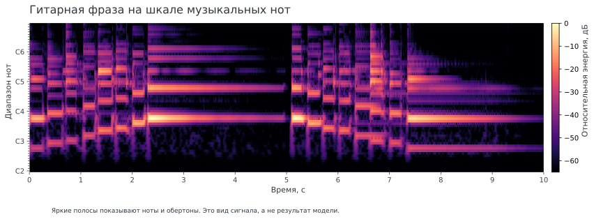
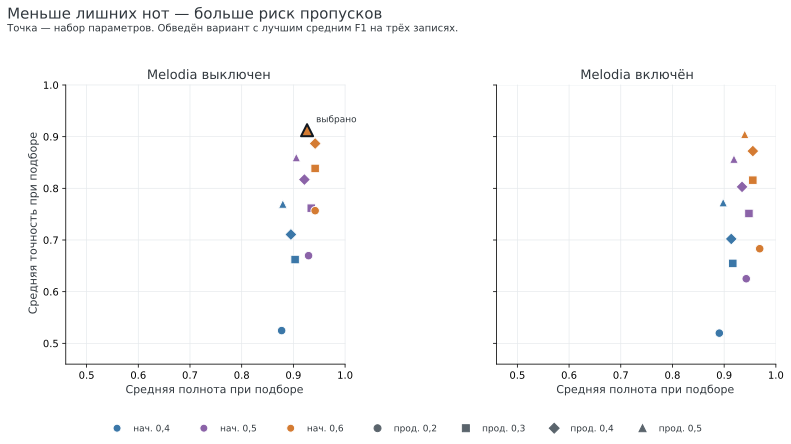
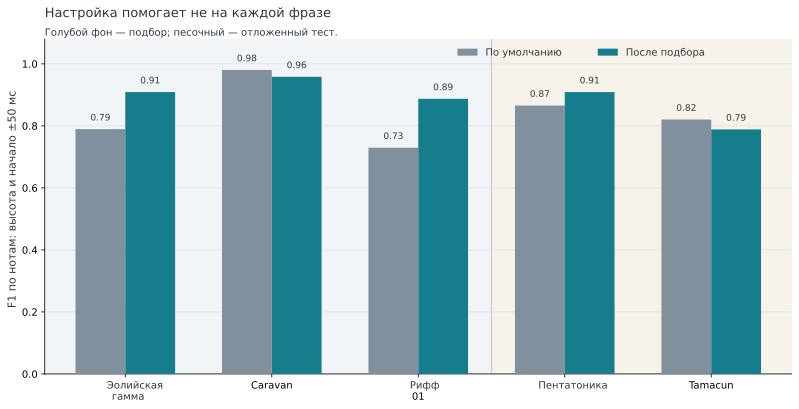
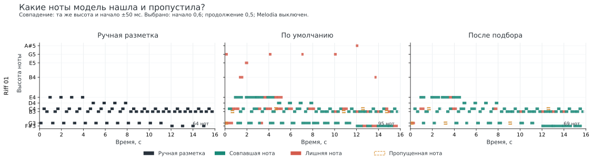
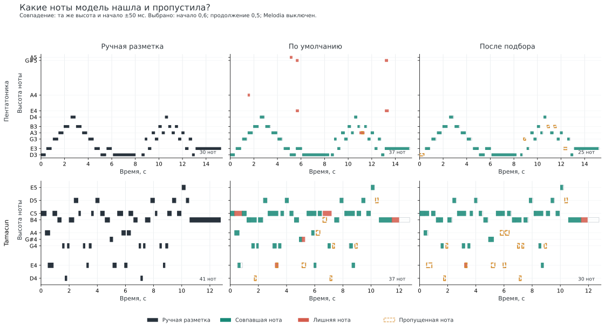

Учебно-исследовательский проект · Audio-to-MIDI · Python
Оценка Basic Pitch на коротких записях акустической гитары
Я собрал небольшой набор гитарных записей с ручной MIDI-разметкой и оценил качество транскрипции Basic Pitch. Эксперимент показывает, как параметры декодирования влияют на точность и полноту распознавания нот.
В область оценки вошла офлайн-транскрипция нотных событий. Распознавание аккордов и потоковая обработка оставлены для отдельных экспериментов.
01 / Цель
Проверить чувствительность транскрипции к параметрам декодирования
Цель пилота — разобраться в последовательности обработки audio-to-MIDI и проверить её на собственных размеченных данных. Basic Pitch оценивает активность нот во времени; декодер преобразует эти оценки в MIDI-события. Я сравнил 24 набора порогов для начала и продолжения ноты. Эксперимент ограничен этапом декодирования; веса нейросети зафиксированы.

02 / Метод
Ручная разметка и фиксированное разделение данных
- Запись пяти фраз в WAV
- Разметка нот в Ableton и экспорт MIDI
- Получение выходов Basic Pitch
- Подбор параметров на трёх записях
- Оценка на двух отложенных записях
Критерий совпадения
Предсказание засчитывалось при совпадении MIDI-высоты и абсолютной ошибке начала ноты до 50 мс. Сопоставление нот выполнялось один к одному. Основная метрика учитывала высоту и начало ноты. Окончание звучания оценивалось отдельно из-за неоднозначной разметки затухания акустической гитары.
Параметры
Порог начала ноты: 0,4 / 0,5 / 0,6; порог продолжения: 0,2 / 0,3 / 0,4 / 0,5; постобработка Melodia: включена или выключена. Получено 24 сочетания. Минимальная длительность ноты сохранялась на уровне Basic Pitch по умолчанию — около 128 мс.
Разделение данных. Эолийская гамма, Caravan и рифф использовались для подбора. Пентатоника и Tamacun составляли отложенный тест. По среднему F1 на первых трёх записях выбран вариант: порог начала 0,6, порог продолжения 0,5, Melodia выключена.
Результаты на двух тестовых записях рассматриваются как описательная проверка внутри этого набора.

03 / Результаты
Выбранная конфигурация повысила точность и снизила полноту
На двух отложенных записях средний F1 изменился с 0,843 до 0,849. Для пентатоники F1 вырос, для Tamacun снизился. На риффе из набора для подбора более строгий декодер уменьшил число лишних событий и повысил F1 с 0,730 до 0,887.

Рифф. При 64 нотах в ручной разметке исходный декодер сформировал 95 событий и правильно сопоставил 58; выбранный — 69 событий и 59 совпадений. Точность выросла с 0,611 до 0,855, полнота — с 0,906 до 0,922, F1 — с 0,730 до 0,887. Медианная ошибка начала совпавших нот составила около 7 мс.

Расчёт F1
P = TP / (TP + FP) R = TP / (TP + FN) F1 = 2PR / (P + R)
P — точность; R — полнота; TP — совпавшие ноты; FP — лишние предсказания; FN — пропущенные ноты. Метрика относится к нотным событиям по заданному критерию совпадения.

| Отложенная фраза | F1 по умолчанию | F1 после подбора | Наблюдение |
|---|---|---|---|
| Пентатоника | 0,866 | 0,909 | Лишних нот стало меньше |
| Tamacun | 0,821 | 0,789 | Пропущенных нот стало больше |
04 / Итог пилота
Рабочий процесс собран; следующий этап требует отдельного набора данных
Мой вклад
- сформулировал задачу и план оценки;
- записал пять гитарных фраз и подготовил ручную MIDI-разметку;
- задал разделение данных, критерий сопоставления и набор метрик;
- собрал код эксперимента и визуализации с помощью ИИ-ассистента;
- проверил ошибки на уровне отдельных нот.
Почему работа завершена на этом этапе
Пилот позволил пройти весь путь от аудиозаписи до количественной оценки MIDI-транскрипции и выявить чувствительность результата к параметрам декодирования. Этого достаточно для проверки методики на собственных данных. Полноценный анализ требует большей выборки мелодий, нескольких инструментов и заранее заданных групп по фактуре и условиям записи. Такой набор позволит оценить, от каких свойств сигнала зависят подходящие параметры.
Промежуточный вывод. На пяти записях повышение порогов уменьшило число лишних нот и одновременно увеличило число пропусков. Итоговый эффект различался между фразами: заметное улучшение риффа сочеталось с практически неизменным средним F1 на двух отложенных записях. Следующий эксперимент должен проверять эту зависимость на расширенном наборе инструментов и музыкального материала.